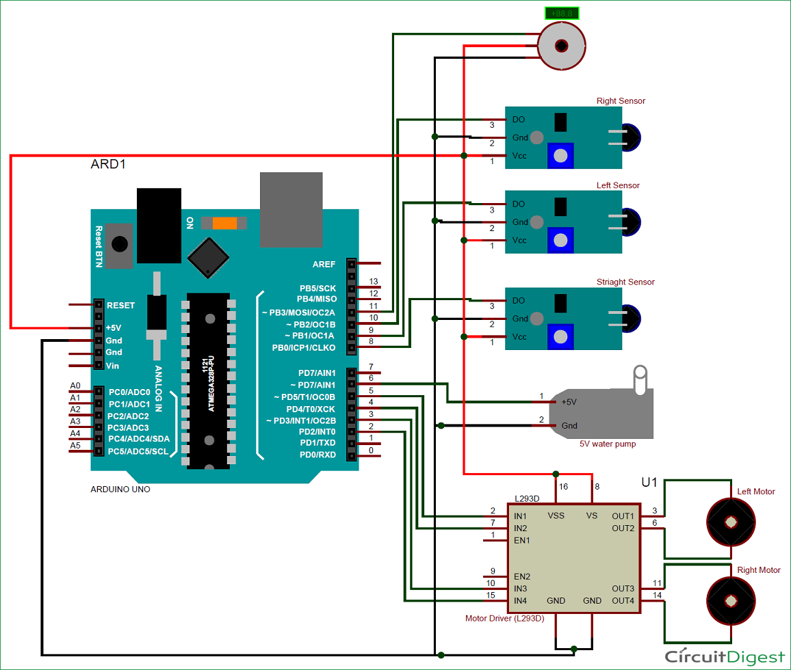

According to National Crime Records Bureau (NCRB), it is estimated that more than 1.2 lakh deaths have been caused because of fire accidents in India from 2010-2014. Even though there are a lot of precautions taken for Fire accidents, these natural/man-made disasters do occur now and then. In the event of a fire breakout, to rescue people and to put out the fire we are forced to use human resources which are not safe. With the advancement of technology especially in Robotics it is very much possible to replace humans with robots for fighting the fire. This would improve the efficiency of firefighters and would also prevent them from risking human lives. Today we are going to build a Fire Fighting Robot using Arduino, which will automatically sense the fire and start the water pump
In this project, we will learn how to build a simple robot using Arduino that could move towards the fire and pump out water around it to put down the fire. It is a very simple robot that would teach us the underlying concept of robotics; you would be able to build more sophisticated robots once you understand the following basics. So let’s get started...
1. Arduino UNO
2. Fire sensor or Flame sensor (3 Nos)
3. Servo Motor (SG90)
4. L293D motor Driver module
5. Small Breadboard
6. Robot chassis with motors and wheel (any type)
7. A small can
8. Connecting wires
